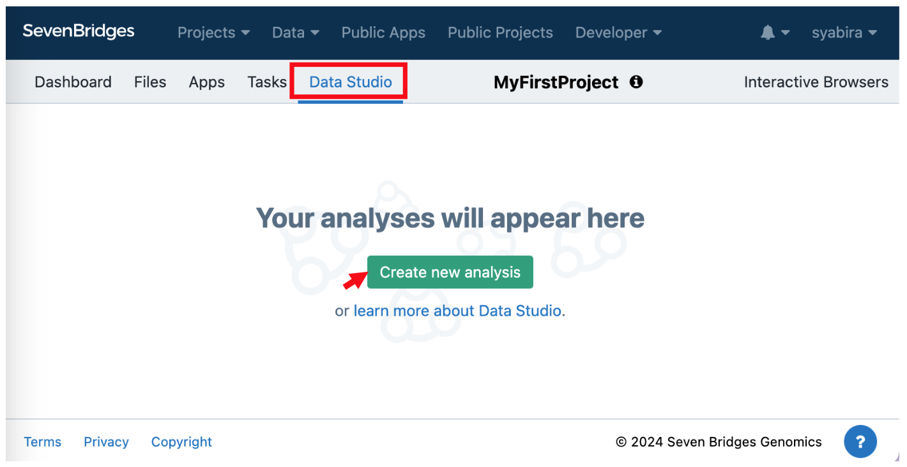
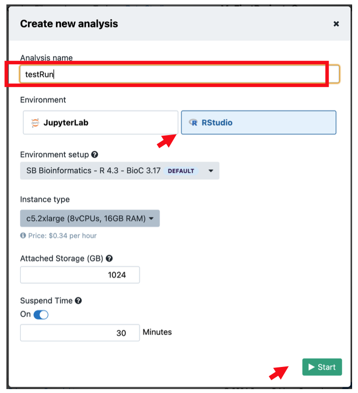
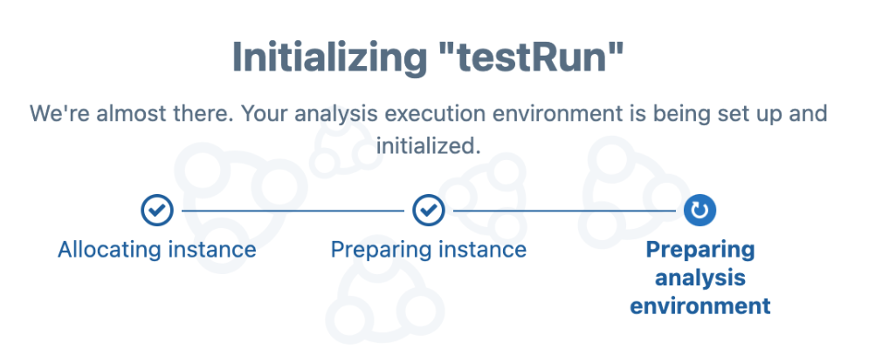
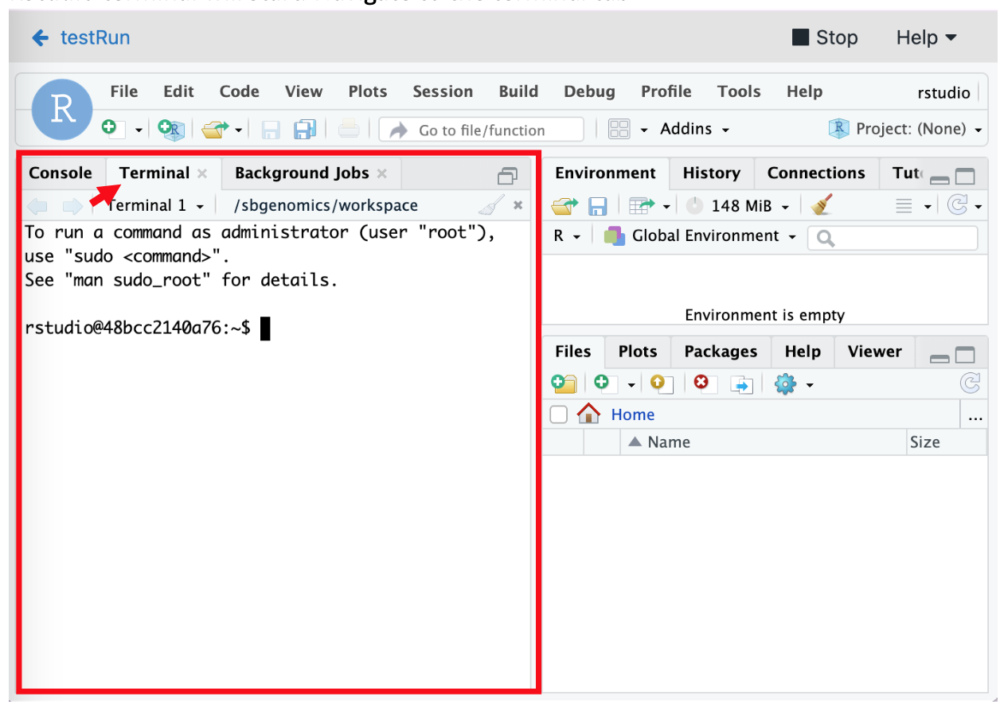
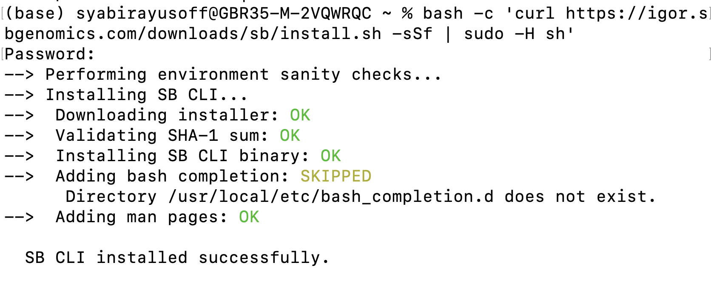
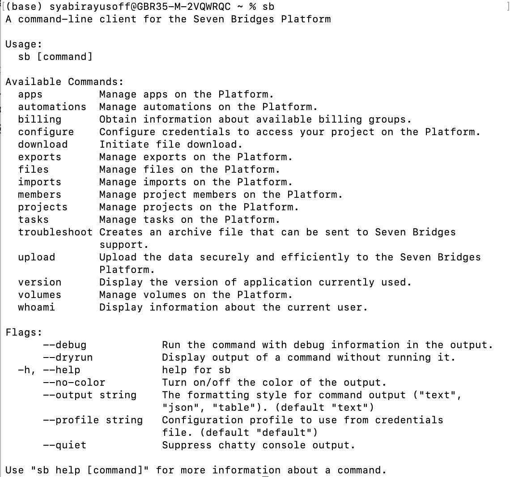
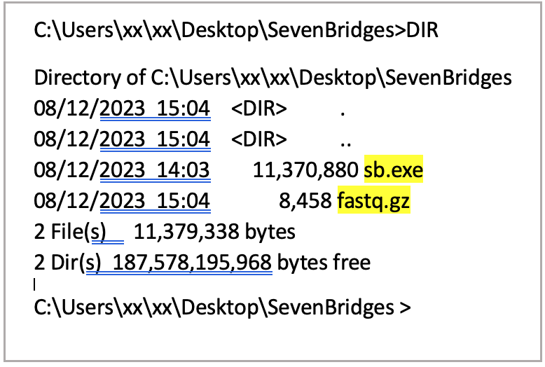

Note that this method is suitable for small datasets.
For larger uploads such as big FASTQ files, consider using command line uploads or FTP.
Seven Bridges will log you out if there is no activity within 15 minutes. To prevent disruption of the upload progress, actively monitor and move your cursor during the process.
Failure to do so may necessitate re-uploading the files.
On the project dashboard, click the Files. tab, and click +Add Files
Click on Add files and choose the source:Your Computer
Select files that you intend to upload. You may select multiple files to upload.
Click Upload button.
File Upload from Other Project created on Velsera
Note:
This method of file transfer is beneficial when you have same files such as refence files that you might want to re-use from other projects.
If you have any BD Rhapsody™ pipeline that has been tailored specific to your project, you may copy the app to your current project using similar approach availabe in App tab.
From the main Project Dashboard, click Files tab to navigate to Files section on your project.
On the top right of the webpage, click Add files and select Projects. A new section would appear on the left side of the webpage.
Use the Search bar or select the project you want to copy the file/s listed in the appeared section.
Once selected, use the tickboxes to select files that you intend to copy and click Copy To Project button then select Copy. A pop-up message would appear confirming the files are now copied to your current project.
Refresh the Files tab on your current project and make sure the file copied successfully.
File Upload through ftp or https
Note:
This option is suitable when you have files from AWS or any other resource that is acessible through an ftp of https link. As an example, a reference files that is available publicly on a cloud platform.
Make sure that you have a stable internet connection to avaoid any disconnection and file corruption.
From the main Project Dashboard, click Files tab to navigate to Files section on your project.
On the top right of the webpage, click Add files and select FTP/HTTP.
Paste the link of the file you want to transfer and click Import.
File Integrity Checks
It is recommended to check your file integrity before setting up your analysis on the Velsera platform. Files that are corrupted, such as FASTQ files, could cause the pipeline to fail. File corruption might occur at any stage of data transfer; internet connection and storage methods are possible causes of file corruption.
To run on files on Seven Bridges, you will need to create a Data Studio Analysis. Navigate to the Data Studio tab and click Create new analysis as shown below.

Create a name Analysis name and select RStudio then Start the analysis.

A new window will be iniCalized. This might take a few minutes.

RStudio terminal will start. Navigate to the terminal tab.

Type to change the directory to your project files on Seven Bridges:
cd /sbgenomics/project-files
To run integrity checks on files:
gunzip --test --verbose filename.fastq.gz
Please make sure to change the filename.fastq.gz to your own file name.
To test more files, add a space between fastq files. Example code below:
You may be prompted to input your device password then press enter.
If the tool is successfully installed, the below message will be printed out.

CLI Configuration
To authenticate your credential with the SB platform, launch the shell promt/terminal and enter:
sb configure
The prompt will ask for the API endpoint and authentication token. Enter accordingly.
Enter the command below and it should display the output:
sb

File Integrity Checks
It is recommended to check your file integrity before upload to Velsera platform. Files that are corrupted, as an example FASTQ files would caused the pipeline failure.
Navigate to the folder contain your project files using command line or terminal.
If unsure, please refer to the video below (MacOS user). If using Linux, please see the link here on how to navigate to your project folder.
To get the directory path of your files, type command below:
pwd
Enter command below to view the files available in current directory.
ls
To check file integrity, enter the command below in your console:
gunzip --test --verbose filename.fastq.gz
Please make sure to change the filename.fastq.gz to your own file name.
To test more files, add a space between fastq files. Example code below:
Once completed, the output for intact files would be "OK". If the file is corrupted, especially CRC error, please re-download the file from source and test again.
File Upload
Suppose the files are located in the Download folder. Copy and paste the following command to navigate to the Download folder:
The --destination input string can be found on the link of your project on Seven Bridges. Example: https://igor.sbgenomics.com/u/biox_support_emea/demo-project. Please use biox_support_emea/demo-project as the input for --destination flag on the command line.
To find out more information about this tool, please copy and paste the link below to your browser.
Once the command line interface downloaded, move the .exe file to the directory where you keep all the files to be uploaded.
Open Command Prompt or other command-line shell programs.
Navigate to your working folder in the command prompt.If unsure, please click the link here on how to find files using command prompt.
Enter command below to confirm the ".exe" and your files are in the correct folder. You should find the ".exe" file and the rest of the files you intend to upload listed on your console.
DIR

Configure CLI
Use command below to configure CLI:
sb configure
The prompt will ask for the API endpoint and authentication token. Enter accordingly. You only need to configure it once.
File Integrity Checks
It is recommended to check your file integrity before upload to Velsera platform. Files that are corrupted, as an example FASTQ files would caused the pipeline failure.
Navigate to the folder contain your project files using command line or terminal.
Enter command below to confirm the files to upload is in the folder.
DIR
To check file integrity, enter the command below in your console:
gunzip --test --verbose filename.fastq.gz
Please make sure to change the filename.fastq.gz to your own file name.
To test more files, add a space between fastq files. Example code below:
Once completed, the output for intact files would be "OK". If the file is corrupted, especially CRC error, please re-download the file from source and test again.
Upload Files
It is recommended to check your file integrity before upload to Velsera platform. Files that are corrupted, as an example FASTQ files would caused the pipeline failure. Navigate to the folder using command line or teminal.
The --destination input string can be found on the link of your project on Seven Bridges. Example:https://igor.sbgenomics.com/u/biox_support_emea/demo-project. Please use biox_support_emea/demo-project as the input for --destination flag on the command line.
To find out more information about this tool, please copy and paste the link below to your browser.